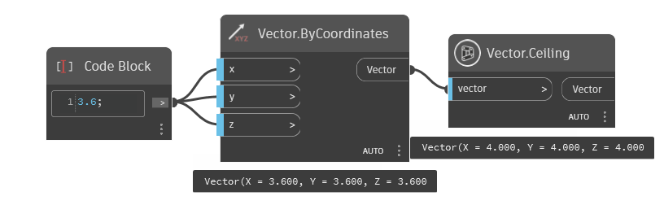
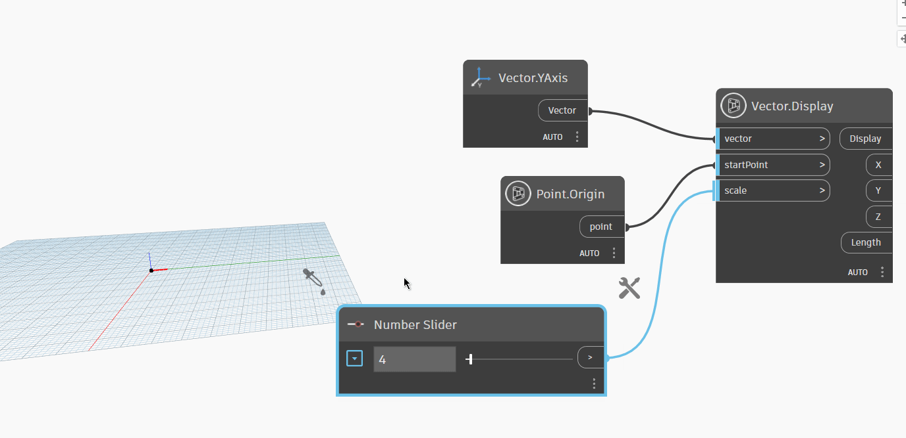
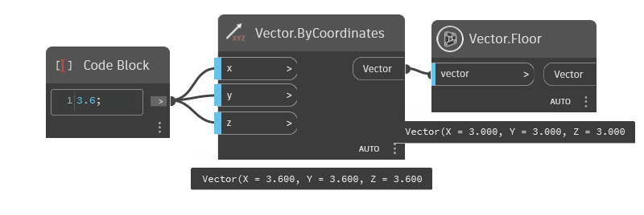
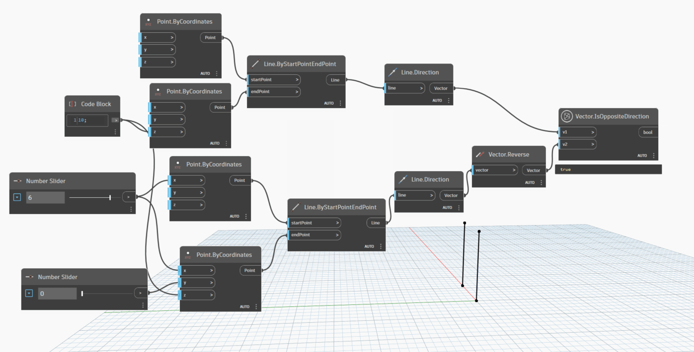
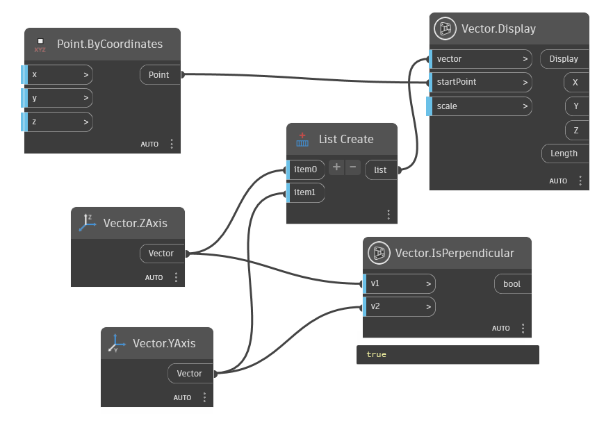
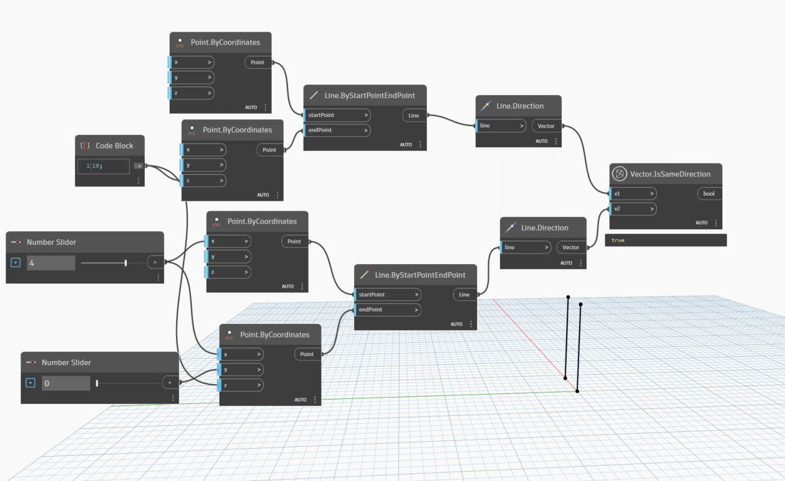

Class Vector
- Namespace
- OpenMEPSandbox.Geometry
- Assembly
- OpenMEPSandbox.dll
public class Vector- Inheritance
-
Vector
- Inherited Members
Methods
Ceiling(Vector)
Returns a new Autodesk.DesignScript.Geometry.Vector object with the largest integer values that are less than or equal to the X, Y, and Z components of the input vector.
public static Vector Ceiling(Vector vector)Parameters
vectorVectorThe input vector.
Returns
- Vector
The Autodesk.DesignScript.Geometry.Vector object with the largest integer values that are less than or equal to the X, Y, and Z components of the input vector.
Examples

Vector.Ceiling.dynCompareTo(Vector, Vector, double)
Compares this a vector with another vector. 0: if this is identical to other 1: if this is greater than other -1: if this is less than other
public static double CompareTo(Vector v1, Vector v2, double tolerance = 0.001)Parameters
v1Vectorthe first vector
v2Vectorthe second vector
tolerancedoublethe tolerance compare two vector
Returns
- double
value compare between two vector
Examples

Display(Vector, Point, double)
Shows a scalable line representing a Vector from a chosen starting point
[MultiReturn(new string[] { "Display", "X", "Y", "Z", "Length" })]
public static Dictionary<string, object?> Display(Vector vector, Point startPoint, double scale = 1000)Parameters
vectorVectorAutodesk.DesignScript.Geometry.Vector
startPointPointAutodesk.DesignScript.Geometry.Point
scaledoublevalue scale start from 1
Returns
- Dictionary<string, object>
GeometryColor
Examples

Vector.Display.dynDivide(Vector, Vector)
Divide two vector
public static Vector Divide(Vector v1, Vector v2)Parameters
v1Vectorthe first vector
v2Vectorthe second vector
Returns
- Vector
Examples

Floor(Vector)
Returns a new Autodesk.DesignScript.Geometry.Vector object with the smallest integer values that are greater than or equal to the X, Y, and Z components of the input vector.
public static Vector Floor(Vector vector)Parameters
vectorVectorThe input vector.
Returns
- Vector
The Autodesk.DesignScript.Geometry.Vector object with the smallest integer values that are greater than or equal to the X, Y, and Z components of the input vector.
Examples

Vector.Floor.dynIsOppositeDirection(Vector, Vector)
Check two Vector is opposite direction or not
[NodeCategory("Query")]
public static bool IsOppositeDirection(Vector v1, Vector v2)Parameters
v1Vectorthe first vector
v2Vectorthe second vector
Returns
- bool
true if two vector is opposite
Examples

Vector.IsOppositeDirection.dynIsPerpendicular(Vector, Vector)
Evaluate whether two Vector is perpendicular or not
public static bool IsPerpendicular(Vector v1, Vector v2)Parameters
v1Vectorfirst vector
v2Vectorsecond vector
Returns
- bool
true if two vector is perpendicular
Examples

Vector.IsPerpendicular.dynIsSameDirection(Vector, Vector)
Check whether two vector is same direction or not
[NodeCategory("Query")]
public static bool IsSameDirection(Vector v1, Vector v2)Parameters
v1Vectorthe first vector
v2Vectorthe second vector
Returns
- bool
true if two vector is same direction
Examples

Vector.IsSameDirection.dynMultiply(Vector, Vector)
Multiply two vector
public static Vector Multiply(Vector v1, Vector v2)Parameters
v1Vectorthe first vector
v2Vectorthe second vector
Returns
- Vector